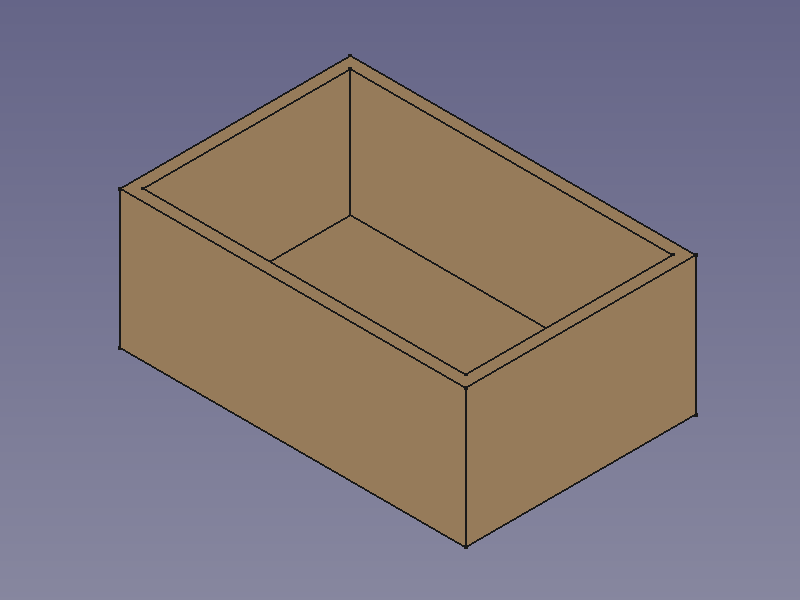
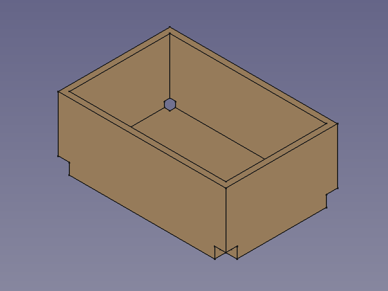
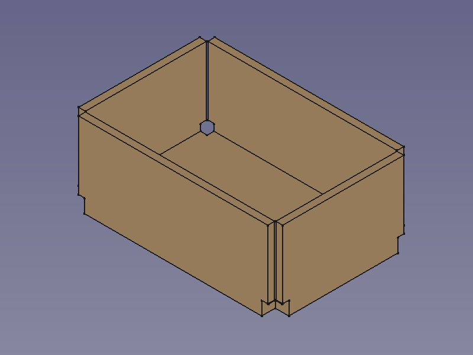
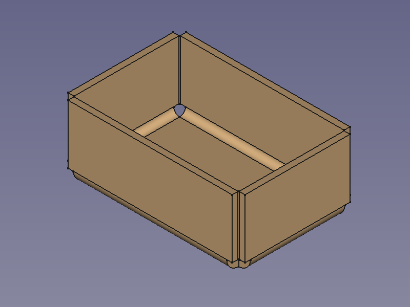
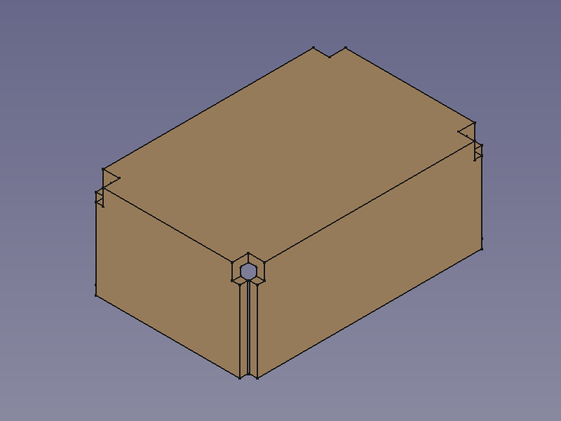
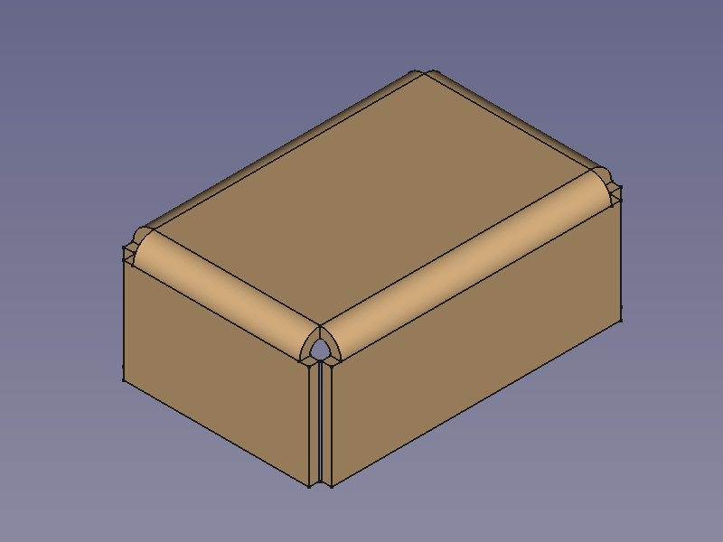

SheetMetal AddBend/de
Diese Dokumentation ist noch nicht fertiggestellt. Bitte hilf mit und trage etwas zur Dokumentation bei.
Die Seite GuiBefehl Modell erklärt, wie Befehle dokumentiert werden sollten. Unter Category:UnfinishedDocu findest du weitere unvollständige Seiten wie diese (und unter Category:UnfinishedDocu/de unvollständige Übersetzungen). Siehe Category:Command Reference für sämtliche Befehle (und Category:UnfinishedDocu/de für vorhandene Übersetzungen).
Siehe WikiSeiten, um zu lernen, wie die Wiki-Seiten bearbeitet werden und FreeCAD Unterstützen, um andere Wege zu entdecken, wie du einen Beitrag leisten kannst.
|
SheetMetal BiegungHinzufügen |
| Menüeintrag |
|---|
| SheetMetal → Make Bend |
| Arbeitsbereich |
| SheetMetal (Blech) |
| Standardtastenkürzel |
| S B |
| Eingeführt in Version |
| - |
| Siehe auch |
| SheetMetal Entlastungsausschnitt hinzufügen, SheetMetal Stoß hinzufügen |
Beschreibung
Der Befehl Biegung hinzufügen tauscht scharfe Kanten zwischen zwei Abschnitten (Grundplatte/Kanten/Falze) eines SheetMetal-Objekts gegen runde Biegungen aus. Ohne diese Bögen wären das Objekt nicht abwickelbar.
{kind=link}
Dieser Befehl ist der dritte von drei Schritten, um ein Schalenobjekt, das mit dem Arbeitsbereich Part oder PartDesign erzeugt wurde, in ein abwickelbares SheetMetal-Objekt umzuwandeln:
   


Biegung hinzufügen - Scharfe Kanten durch Bögen ersetzen
Anwendung
- Eine oder mehrere Kanten auswählen.
- Es gibt mehrere Möglichkeiten, das Werkzeug aufzurufen:
- Die Schaltfläche Bogen einfügen drücken.
- Den Menüeintrag SheetMetal → Bogen einfügen auswählen.
- Ein Rechtsklick in die Baumansicht oder die 3D-Ansicht und die Menüoption SheetMetal → Bogen einfügen im Kontextmenü auswählen.
- Das Tastaturkürzel S dann B.
- Das Aufgaben-Fenster Eigenschaften des Bogens an der scharfkantigen Ecke wird geöffnet (eingeführt in Version 0.5.00).
- Wahlweise die Schaltfläche Auswahl drücken, um weitere Kanten auszuwählen.
- Die Schaltfläche Vorschau drücken, um die Auswahl abzuschließen und die Änderungen anzuzeigen.
- Wahlweise die Parameter im Aufgaben-Fenster anpassen.
- Die Schaltfläche OK rücken, um den Befehl abzuschließen und das Aufgaben-Fenster zu schließen.
- Ein SolidBend-Objekt wird erstellt und enthält einen neuen Bogen an jeder ausgewählten Kante.
- Wahlweise die Parameter im Eigenschaften-Ansicht anpassen.
 
Hinweise
Die Befehle Entlastungsausschnitt hinzufügen, Stoß hinzufügen und Biegung hinzufügen funktionieren am besten mit hohlen Quadern, d.h. Schalenobjekten mit einer konstanten Wandstärke und nur 90° Winkeln zwischen den Flächen.
{kind=link}
{kind=link}
Siehe SheetMetal Entlastungsausschnitt hinzufügen für Hinweise zur Erstellung von Schalenobjekten aus Quadern.
Eigenschaften
Siehe auch: Eigenschafteneditor.
Ein SheetMetal-SolidBend-Objekt wird von einem Part-Formelement abgeleitet oder, wenn es sich in einem PartDesign-Körper befindet, von einem PartDesign Formelement und erbt alle seine Eigenschaften. Außerdem hat es die folgenden zusätzlichen Eigenschaften:
Daten
Parameters
- Daten-Eigenschaftbase Object (
LinkSub): "Base object". Verknüpfungen zu den Kanten, die gebogen werden sollen. - Daten-Eigenschaftradius (
Length): "Bend Radius". Standardwert:1,00 mm. - Daten-Eigenschaftthickness (
Length): "Thickness of sheetmetal". Standardwert:1,00 mm.